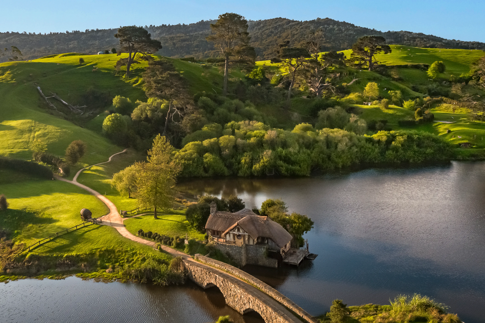
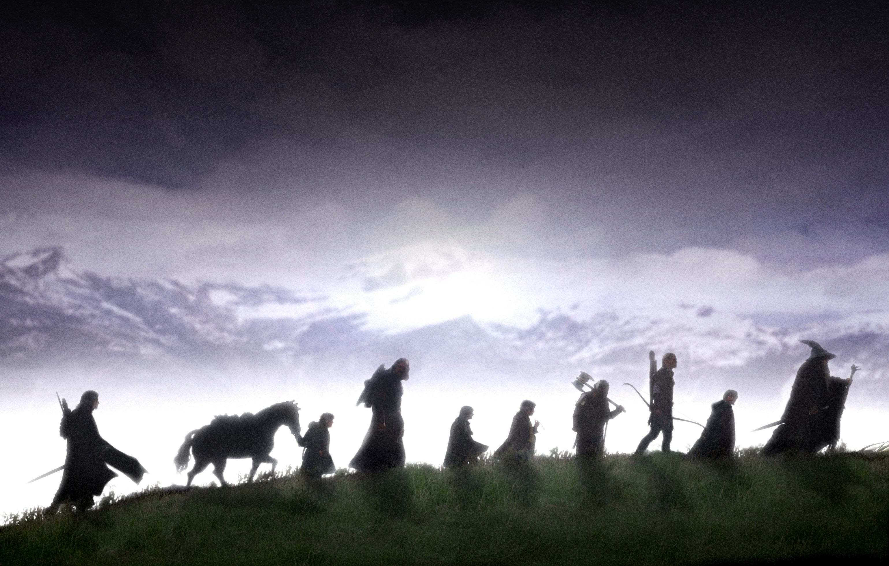

Imagen de Tolkien
John Ronald Reuel Tolkien, su nombre completo, nació el 3 de enero del 1892 en el Estado libre de Orange (actualmente Sudáfrica), y murió el 2 de septiembre de 1973 en Bournemouth, Inglaterra, Reino Unido. Fue un escritor, poeta, filólogo, lingüista y profesor universitario británico. Conocido sobre todo por ser el autor del hobbit y el señor de los anillos
Imagen de hobbiton (Nueva Zelanda)
De 1925 a 1945, Tolkien estuvo en la cátedra Rawlinson y Bosworth en la Universidad de Oxford, dando clases de anglosajón y ya entre 1945 y 1959, fue profesor de lengua y literatura inglesa en Merton. Fue amigo del conocido escritor Clive Staples Lewis (C. S. Lewis), el cual es famoso por escribir las Crónicas da Narnia. En la fecha del 28 de marzo de 1972, Tolkien fue nombrado Comendador de la Orden del Imperio Británico.
La compañia del anillo
Portada libro 2 Cronicas de Narnia
Ahora, a Tolkien se le considera como el originario de la literatura moderna de fantasía. Sus obras han inspirado a muchos otros libros de fantasía. En 2008, el periódico The Times le posicionó el sexto en la lista de “los 50 escritores británicos más grandes desde 1945”.